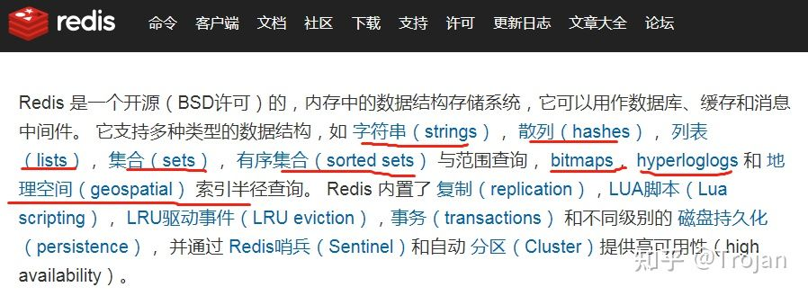
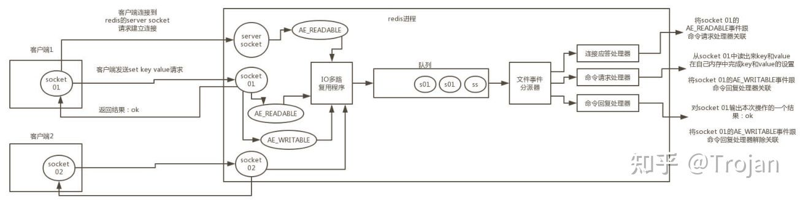

写在前面
大家好，我是老田，前面我们已经分享了五篇连环炮文章，今天我们继续。今天我们接着来聊聊Redis。Redis已经成为我们开发者必备技能之一了，同时面试也是必问的。下面就来对Redis进行一个总结，然后赠送43连环炮。
Redis的43连环炮：
1、说说什么是Redis?
2、Redis 有什么优点和缺点？
3、Redis 的数据类型有哪些？
4、Redis 是单线程的吗？
5、Redis 为什么设计成单线程的？
6、Redis 和 Memcached 的区别有哪些？
7、请说说 Redis 的线程模型？
8、为什么 Redis 单线程模型也能效率这么高？
9、Redis 是单线程的，如何提高多核 CPU 的利用率？
10、Redis 的同步机制了解是什么？
11、什么是 Redis Pipelining？
12、Redis 有几种持久化方式？
13、说说RDB的 优缺点
14、说说AOF的 优缺点
15、两种持久化方式该如何选择？
16、面试官追问那如果突然机器掉电会怎样？
17、面试官追问 bgsave 的原理是什么？
18、Redis 有几种数据“过期”策略？
19、Redis 有哪几种数据“淘汰”策略？
20、一个字符串类型的值能存储最大容量是多少？
21、熟悉Redis的哪些客户端？
22、什么是 Redis 事务？
23、Redis 事务的注意点有哪些？
24、为什么Redis 事务不支持回滚？
25、Redis有哪些使用场景？
26、如何使用 Redis 实现分布式锁？
27、分布式锁的实现条件？
28、Redis和Zookeeper实现的分布式锁有什么区别，哪个更好的呢？
29、如何使用 Redis 实现分布式限流？
30、如何使用 Redis 实现消息队列？
31、Redis 高可用方案有哪些？
32、什么是 Redis 主从同步？
33、如何使用 Redis Sentinel 实现高可用？
34、如果使用 Redis Cluster 实现高可用？
35、说说 Redis 哈希槽的概念？
36、Redis Cluster 的主从复制模型是怎样的？
37、Redis 的哨兵有什么功能？
38、Redis 哨兵和集群的区别是什么？
39、缓存命中率表示什么？
40、假如 Redis 里面有 1 亿个 key，其中有 10w 个 key 是以某个固定的已知的前缀开头的，如果将它们全部找出来？
41、请说说你们生产环境中的 Redis 是怎么部署的？
42、你知道有哪些 Redis 分区实现方案？
43、如何提高 Redis 命中率？
44、怎么优化 Redis 的内存占用？
45、什么是缓存穿透？怎么解决？
46、什么是缓存雪崩？ 怎么解决？
47、对 Redis 进行性能优化，有些什么建议？
…..(不断完善ing)
Redis核心知识总结
我给大家搞了一张Redis的核心知识总结思维导图：

需要思维导图，请私聊我，免费赠送
1、说说什么是Redis?
Redis 是一个开源（BSD许可），内存存储的数据结构服务器，可用作数据库，高速缓存和消息队列代理。它支持字符串、哈希表、列表、集合、有序集合，位图，HyperLogLogs 等数据类型。内置复制、Lua 脚本、LRU 收回、事务，以及不同级别磁盘持久化功能，同时通过 Redis Sentinel 提供高可用，通过 Redis Cluster 提供自动分区。根据月度排行网站 DB-Engines的数据，Redis 是最流行的键值对存储数据库。
以上是官方的介绍，我们也可以做一个简单回答：
Redis 全称为：Remote Dictionary Server（远程数据服务），是一个基于内存且支持持久化的高性能 key-value 数据库。具备一下三个基本特征：
- 多数据类型
- 持久化机制
- 主从同步
2、Redis 有什么优点和缺点？
Redis 优点
- 读写性能优异， Redis能读的速度是110000次/s，写的速度是81000次/s。
- 支持数据持久化，支持AOF和RDB两种持久化方式。
- 支持事务，Redis的所有操作都是原子性的，同时Redis还支持对几个操作合并后的原子性执行。
- 数据结构丰富，除了支持string类型的value外还支持hash、set、zset、list等数据结构。
- 支持主从复制，主机会自动将数据同步到从机，可以进行读写分离。
Redis 缺点
- 数据库容量受到物理内存的限制，不能用作海量数据的高性能读写，因此Redis 适合的场景主要局限在较小数据量的高性能操作和运算上。
- Redis 不具备自动容错和恢复功能，主机从机的宕机都会导致前端部分读写请求失败，需要等待机器重启或者手动切换前端的IP才能恢复。
- 主机宕机，宕机前有部分数据未能及时同步到从机，切换IP后还会引入数据不一致的问题，降低了系统的可用性。
- Redis 较难支持在线扩容，在集群容量达到上限时在线扩容会变得很复杂。为避免这一问题，运维人员在系统上线时必须确保有足够的空间，这对资源造成了很大的浪费。
3、Redis 的数据类型有哪些？
Redis 主要有以下几种数据类型：
- String：这是最简单的类型，就是普通的 set 和 get，做简单的 KV 缓存。
- Hashe：这个是类似 map 的一种结构，这个一般就是可以将结构化的数据，比如一个对象（前提是这个对象没嵌套其他的对象）给缓存在 Redis 里，然后每次读写缓存的时候，可以就操作 hash 里的某个字段。
- List：List 是有序列表，这个可以玩儿出很多花样。比如可以通过 list 存储一些列表型的数据结构，类似粉丝列表、文章的评论列表之类的东西。
- Sets：是无序集合，自动去重。直接基于 set 将系统里需要去重的数据扔进去，自动就给去重了，如果你需要对一些数据进行快速的全局去重，你当然也可以基于 jvm 内存里的 HashSet 进行去重，但是如果你的某个系统部署在多台机器上呢？得基于 Redis 进行全局的 set 去重。
- Sorted Set：排序的 set，去重但可以排序，写进去的时候给一个分数，自动根据分数排序。 可以用来做排行榜相关功能。
一般文章都是以Redis只有 5 种数据类型，还有 Bitmaps、HyperLogLogs、Streams 等。
中文官网上的解释：

4、Redis 是单线程的吗？
这里的单线程指的是 Redis 网络请求模块使用了一个线程（所以不需考虑并发安全性），即一个线程处理所有网络请求，其他模块仍用了多个线程。
5、Redis 为什么设计成单线程的？
- 绝大部分请求是纯粹的内存操作（非常快速）
- 采用单线程，避免了不必要的上下文切换和竞争条件
- 非阻塞 IO，内部采用 epoll，epoll 中的读、写、关闭、连接都转化成了事件，然后利用 epoll 的多路复用特性，避免 IO 代价。
6、Redis 和 Memcached 的区别有哪些？
从以下8个方面来讲：
- Redis 和 Memcache 都是将数据存放在内存中，都是内存数据库。不过 Memcache 还可用于缓存其他东西，例如图片、视频等等。
- Memcache 仅支持key-value结构的数据类型，Redis不仅仅支持简单的key-value类型的数据，同时还提供list，set，hash等数据结构的存储。
- 虚拟内存– Redis 当物理内存用完时，可以将一些很久没用到的value 交换到磁盘分布式–设定 Memcache 集群，利用 magent 做一主多从; Redis 可以做一主多从。都可以一主一从
- 存储数据安全– Memcache 挂掉后，数据没了； Redis 可以定期保存到磁盘（持久化）
- Memcache 的单个value最大 1m，Redis 的单个value最大 512m。
- 灾难恢复– Memcache 挂掉后，数据不可恢复; Redis 数据丢失后可以通过 aof 恢复
- Redis 原生就支持集群模式， Redis3.0 版本中，官方便能支持Cluster模式了， Memcached 没有原生的集群模式，需要依赖客户端来实现，然后往集群中分片写入数据。
- Memcached 网络IO模型是多线程，非阻塞IO复用的网络模型，原型上接近于 nignx。而 Redis使用单线程的IO复用模型，自己封装了一个简单的 AeEvent 事件处理框架，主要实现类epoll，kqueue 和 select，更接近于Apache早期的模式。
7、请说说 Redis 的线程模型？
这问题是因为前面回答问题的时候提到了 Redis 是基于非阻塞的IO复用模型。如果这个问题回答不上来，就相当于前面的回答是给自己挖坑，因为你答不上来，面试官对你的印象可能就要打点折扣了。
Redis 内部使用文件事件处理器 file event handler，这个文件事件处理器是单线程的，所以Redis 才叫做单线程的模型。它采用 IO 多路复用机制同时监听多个 socket，根据 socket 上的事件来选择对应的事件处理器进行处理。
文件事件处理器的结构包含 4 个部分：
- 多个 socket。
- IO 多路复用程序。
- 文件事件分派器。
- 事件处理器（连接应答处理器、命令请求处理器、命令回复处理器）。
多个 socket 可能会并发产生不同的操作，每个操作对应不同的文件事件，但是 IO 多路复用程序会监听多个 socket，会将 socket 产生的事件放入队列中排队，事件分派器每次从队列中取出一个事件，把该事件交给对应的事件处理器进行处理。
来看客户端与 Redis 的一次通信过程：

下面来大致说一下这个图：
- 客户端 Socket01 向 Redis 的 Server Socket 请求建立连接，此时 Server Socket 会产生一个AE_READABLE 事件，IO 多路复用程序监听到 server socket 产生的事件后，将该事件压入队列 中。文件事件分派器从队列中获取该事件，交给连接应答处理器。连接应答处理器会创建一个 能与客户端通信的 Socket01，并将该 Socket01 的 AE_READABLE 事件与命令请求处理器关 联。
- 假设此时客户端发送了一个 set key value 请求，此时 Redis 中的 Socket01 会产生AE_READABLE 事件，IO 多路复用程序将事件压入队列，此时事件分派器从队列中获取到该事 件，由于前面 Socket01 的 AE_READABLE 事件已经与命令请求处理器关联，因此事件分派器 将事件交给命令请求处理器来处理。命令请求处理器读取 Socket01 的 set key value 并在自己 内存中完成 set key value 的设置。操作完成后，它会将 Socket01 的 AE_WRITABLE 事件与令 回复处理器关联。
- 如果此时客户端准备好接收返回结果了，那么 Redis 中的 Socket01 会产生一个AE_WRITABLE 事件，同样压入队列中，事件分派器找到相关联的命令回复处理器，由命令回复处理器对 Socket01 输入本次操作的一个结果，比如 ok，之后解除 Socket01 的AE_WRITABLE 事件与命令回复处理器的关联。
这样便完成了一次通信。 不要怕这段文字，结合图看，一遍不行两遍，实在不行可以网上查点资料结合着看，一定要搞清楚，否则前面吹的牛逼就白费了。
8、为什么 Redis 单线程模型也能效率这么高？
可以从下面5个方面来回答：
- C语言实现，效率高
- 纯内存操作
- 基于非阻塞的IO复用模型机制
- 单线程的话就能避免多线程的频繁上下文切换问题
- 丰富的数据结构（全称采用hash结构，读取速度非常快，对数据存储进行了一些优化，比如亚索表，跳表等）
9、Redis 是单线程的，如何提高多核 CPU 的利用率？
CPU不太可能是Redis的瓶颈，一般内存和网络才有可能是。例如使用Redis的管道（pipelining）在liunx系统上运行可以达到500K的RPS(requests per second)，因此，如果您的应用程序主要使用O(N) 或者O(log(N)) 的 命令，他们几乎不需要使用什么CPU。
然而，为了最大限度的使用CPU，可以在同一个服务器部署多个Redis的实例，并把他们当作不同的服务器来使用，在某些时候，无论如何一个服务器是不够的，所以，如果你想使用多个CPU，你可以考虑一下分片（shard）。
在Redis的客户端类库里面，比如RB（Ruby的客户端）和Predis（最常用的PHP客户端之一），能够使用一致性哈希（consistent hashing）来处理多个Redis实例。
10、Redis 的同步机制了解是什么？
Redis可以使用主从同步，从从同步。第一次同步时，主节点做一次bgsave，并同时将后续修改操作记录到内存buffer，待完成后将rdb文件全量同步到复制节点，复制节点接受完成后将rdb镜像加载到内存。
加载完成后，再通知主节点将期间修改的操作记录同步到复制节点进行重放就完成了同步过程。
11、什么是 Redis Pipelining？
Redis有着更为复杂的数据结构并且提供对他们的原子性操作，这是一个不同于其他数据库的进化路径。Redis的数据类型都是基于基本数据结构的同时对程序员透明，无需进行额外的抽象。
Redis运行在内存中但是可以持久化到磁盘，所以在对不同数据集进行高速读写时需要权衡内存，应为数据量不能大于硬件内存。在内存数据库方面的另一个优点是， 相比在磁盘上相同的复杂的数据结构，在内存中操作起来非常简单，这样Redis可以做很多内部复杂性很强的事情。
同时，在磁盘格式方面他们是紧凑的以追加的方式产生的，因为他们并不需要进行随机访问。
12、Redis 有几种持久化方式？
面试的时候，如果不能完整回答出来，也不会有大问题。重点，在于有条理，对 RDB 和 AOF 有理解。
Redis 提供了两种方式，实现数据的持久化到硬盘。
1、【全量】RDB 持久化，是指在指定的时间间隔内将内存中的数据集快照写入磁盘。实际操作过程是，fork 一个子进程，先将数据集写入临时文件，写入成功后，再替换之前的文件，用二进制压缩存储。
2、【增量】AOF持久化，以日志的形式记录服务器所处理的每一个写、删除操作，查询操作不会记录，以文本的方式记录，可以打开文件看到详细的操作记录。
13、说说RDB的 优缺点
优点
- 灵活设置备份频率和周期。你可能打算每个小时归档一次最近 24 小时的数据，同时还要每天归档一次最近 30 天的数据。通过这样的备份策略，一旦系统出现灾难性故障，我们可以非常容易的进行恢复。
- 非常适合冷备份，对于灾难恢复而言，RDB 是非常不错的选择。因为我们可以非常轻松的将一个单独的文件压缩后再转移到其它存储介质上。推荐，可以将这种完整的数据文件发送到一些远程的安全存储上去，比如说 Amazon 的 S3 云服务上去，在国内可以是阿里云的 OSS 分布式存储上。
- 性能最大化。对于 Redis 的服务进程而言，在开始持久化时，它唯一需要做的只是 fork 出子进程，之后再由子进程完成这些持久化的工作，这样就可以极大的避免服务进程执行 IO 操作了。也就是说，RDB 对 Redis 对外提供的读写服务，影响非常小，可以让 Redis 保持高性能。
- 恢复更快。相比于 AOF 机制，RDB 的恢复速度更更快，更适合恢复数据，特别是在数据集非常大的情况。
缺点
- 如果你想保证数据的高可用性，即最大限度的避免数据丢失，那么 RDB 将不是一个很好的选择。因为系统一旦在定时持久化之前出现宕机现象，此前没有来得及写入磁盘的数据都将丢失。所以，RDB 实际场景下，需要和 AOF 一起使用。
- 由于 RDB 是通过 fork 子进程来协助完成数据持久化工作的，因此，如果当数据集较大时，可能会导致整个服务器停止服务几百毫秒，甚至是 1 秒钟。所以，RDB 建议在业务低估，例如在半夜执行。
14、说说AOF的 优缺点
优点
1、该机制可以带来更高的数据安全性
，即数据持久性。Redis 中提供了 3 种同步策略，即每秒同步、每修改(执行一个命令)同步和不同步。
- 事实上，每秒同步也是异步完成的，其效率也是非常高的，所差的是一旦系统出现宕机现象，那么这一秒钟之内修改的数据将会丢失。
- 而每修改同步，我们可以将其视为同步持久化，即每次发生的数据变化都会被立即记录到磁盘中。可以预见，这种方式在效率上是最低的。
- 至于不同步，无需多言，我想大家都能正确的理解它。
2、由于该机制对日志文件的写入操作采用的是 append 模式，因此在写入过程中即使出现宕机现象，也不会破坏日志文件中已经存在的内容。
- 因为以 append-only 模式写入，所以没有任何磁盘寻址的开销，写入性能非常高。
- 另外，如果我们本次操作只是写入了一半数据就出现了系统崩溃问题，不用担心，在 Redis 下一次启动之前，我们可以通过 redis-check-aof 工具来帮助我们解决数据一致性的问题。
3、如果 AOF 日志过大，Redis 可以自动启用 rewrite 机制。即使出现后台重写操作，也不会影响客户端的读写。因为在 rewrite log 的时候，会对其中的指令进行压缩，创建出一份需要恢复数据的最小日志出来。再创建新日志文件的时候，老的日志文件还是照常写入。当新的 merge 后的日志文件 ready 的时候，再交换新老日志文件即可。
4、AOF 包含一个格式清晰、易于理解的日志文件用于记录所有的修改操作。事实上，我们也可以通过该文件完成数据的重建。
缺点
1、对于相同数量的数据集而言，AOF 文件通常要大于 RDB 文件。RDB 在恢复大数据集时的速度比 AOF 的恢复速度要快。
2、根据同步策略的不同，AOF 在运行效率上往往会慢于 RDB，总之，每秒同步策略的效率是比较高的，同步禁用策略的效率和 RDB 一样高效。
3、以前 AOF 发生过 bug，就是通过 AOF 记录的日志，进行数据恢复的时候，没有恢复一模一样的数据出来。所以说，类似 AOF 这种较为复杂的基于命令日志/merge/回放的方式，比基于 RDB 每次持久化一份完整的数据快照文件的方式，更加脆弱一些，容易有 bug。不过 AOF 就是为了避免 rewrite 过程导致的 bug，因此每次 rewrite 并不是基于旧的指令日志进行 merge 的，而是基于当时内存中的数据进行指令的重新构建，这样健壮性会好很多。
15、两种持久化方式该如何选择？
bgsave 做镜像全量持久化，AOF 做增量持久化。因为 bgsave 会耗费较长时间，不够实时，在停机的时候会导致大量丢失数据，所以需要 AOF 来配合使用。在 Redis 实例重启时，会使用 bgsave 持久化文件重新构建内存，再使用 AOF 重放近期的操作指令来实现完整恢复重启之前的状态。
一般来说， 如果想达到足以媲美PostgreSQL的数据安全性， 你应该同时使用两种持久化功能。如果你非常关心你的数据， 但仍然可以承受数分钟以内的数据丢失，那么你可以只使用RDB持久化。
有很多用户都只使用AOF持久化，但并不推荐这种方式：因为定时生成RDB快照（snapshot）非常便于进行数据库备份， 并且 RDB 恢复数据集的速度也要比AOF恢复的速度要快，除此之外， 使用RDB还可以避免之前提到的AOF程序的问题。
16、面试官追问那如果突然机器掉电会怎样？
取决于 AOF 日志 sync 属性的配置，如果不要求性能，在每条写指令时都 sync 一下磁盘，就不会丢失数据。但是在高性能的要求下每次都 sync 是不现实的，一般都使用定时 sync，比如 1 秒 1 次，这个时候最多就会丢失 1 秒的数据。 实际上，极端情况下，是最多丢失 2 秒的数据。因为 AOF 线程，负责每秒执行一次 fsync 操作，操作完成后，记录最后同步时间。主线程，负责对比上次同步时间，如果超过 2 秒，阻塞等待成功。
17、面试官追问 bgsave 的原理是什么？
fork 和 cow。fork 是指 Redis 通过创建子进程来进行 bgsave 操作。cow 指的是 copy on write，子进程创建后，父子进程共享数据段，父进程继续提供读写服务，写脏的页面数据会逐渐和子进程分离开来。 这里 bgsave 操作后，会产生 RDB 快照文件。
18、Redis 有几种数据“过期”策略？
Redis 的过期策略，就是指当 Redis 中缓存的 key 过期了，Redis 如何处理。
Redis 提供了 3 种数据过期策略：
- 被动删除：当读/写一个已经过期的 key 时，会触发惰性删除策略，直接删除掉这个过期 key。
- 主动删除：由于惰性删除策略无法保证冷数据被及时删掉，所以 Redis 会定期主动淘汰一批已过期的 key。
- 主动删除：当前已用内存超过 maxmemory 限定时，触发主动清理策略。
在 Redis 中，同时使用了上述 3 种策略，即它们非互斥的。
19、Redis 有哪几种数据“淘汰”策略？
Redis一共有六种数据淘汰策略：
1.noeviction:返回错误当内存限制达到，并且客户端尝试执行会让更多内存被使用的命令。
2.allkeys-lru: 尝试回收最少使用的键（LRU），使得新添加的数据有空间存放。
3.volatile-lru: 尝试回收最少使用的键（LRU），但仅限于在过期集合的键,使得新添加的数据有空间存放。
4.allkeys-random: 回收随机的键使得新添加的数据有空间存放。
5.volatile-random: 回收随机的键使得新添加的数据有空间存放，但仅限于在过期集合的键。
6.volatile-ttl: 回收在过期集合的键，并且优先回收存活时间（TTL）较短的键,使得新添加的数据有空间存放。
20、一个字符串类型的值能存储最大容量是多少？
512M
21、熟悉Redis的哪些客户端？
Jedis
是我们最熟悉和最常用的客户端。轻量，简洁，便于集成和改造。
Jedis 多个线程使用一个连接的时候线程不安全。可以使用连接池，为每个请求创建不同的连接，基于 Apache common pool 实现。跟数据库一样，可以设置最大连接数等参数。Jedis 中有多种连接池的子类
Jedis 有 4 种工作模式：单节点、分片、哨兵、集群。
3 种请求模式：Client、Pipeline、事务。Client 模式就是客户端发送一个命令，阻塞等待服务端执行，然后读取 返回结果。Pipeline 模式是一次性发送多个命令，最后一次取回所有的返回结果，这种模式通过减少网络的往返时间和 io 读写次数，大幅度提高通信性能。第三种是事务模式。Transaction 模式已开启 Redis 的事务管理，事务模式开启后，所有的命令（除了 exec，discard，multi 和 watch）到达服务端以后不会立即执行，会进入一个等待队列。
Luttece
与 Jedis 相比，Lettuce 则完全克服了其线程不安全的缺点：Lettuce 是一个可伸缩的线程安全的 Redis 客户端，支持同步、异步和响应式模式（Reactive）。多个线程可以共享一个连接实例，而不必担心多线程并发问题。
同步调用：异步的结果使用 RedisFuture 包装，提供了大量回调的方法。
异步调用：它基于 Netty 框架构建，支持 Redis 的高级功能，如 Pipeline、发布订阅，事务、Sentinel，集群，支持连接池。Lettuce 是 Spring Boot 2.x 默认的客户端，替换了 Jedis。集成之后我们不需要单独使用它，直接调用 Spring 的 RedisTemplate 操作，连接和创建和关闭也不需要我们操心。
Redisson
是一个在 Redis 的基础上实现的 Java 驻内存数据网格（In-Memory Data Grid），提供了分布式和可扩展的 Java 数据结构。
特点
- 基于 Netty 实现，采用非阻塞 IO，性能高
- 支持异步请求
- 支持连接池、pipeline、LUA Scripting、Redis Sentinel、Redis Cluster 不支持事务，官方建议以 LUA Scripting 代替事务
- 主从、哨兵、集群都支持。Spring 也可以配置和注入 RedissonClient。
实现分布式锁
在 Redisson 里面提供了更加简单的分布式锁的实现。
22、什么是 Redis 事务？
可以一次性执行多条命令，本质上是一组命令的集合。一个事务中的所有命令都会序列化，然后按顺序地串行化执行，而不会被插入其他命令。
Redis的事务相关命令有：
（1）DISCARD：取消事务，放弃执行事务块中的所有命令
（2）EXEC：执行事务块中的命令
（3）MULTI：标记一个事务的开始
（4）UNWATCH：取消WATCH命令对所有 key 的监视
（5）WATCH key [key…]：监视一个（或多个）key，如果在事务之前执行这个（或者这些）key被其他命令所改动，那么事务将会被打断。
23、Redis 事务的注意点有哪些？
- 不支持回滚，如果事务中有错误的操作，无法回滚到处理前的状态，需要开发者处理。
- 在执行完当前事务内所有指令前，不会同时执行其他客户端的请求。
24、为什么Redis 事务不支持回滚？
Redis 事务不支持回滚，如果遇到问题，会继续执行余下的命令。 这一点和关系型数据库不太一致。这样处理的原因有：
- 只有语法错误，Redis才会执行失败，例如错误类型的赋值， 这就是说从程序层面完全可以捕获以及解决这些问题
- 支持回滚需要增加很多工作，不支持的情况下，Redis 可以保持简单、速度快的特性
25、Redis有哪些使用场景？
常见Redis的使用场景如下：
缓存数据
Redis提供了键过期功能，也提供了灵活的键淘汰策略，所以，现在Redis用在缓存的场合非常多。
排行榜
很多网站都有排行榜应用的，如京东的月度销量榜单、商品按时间的上新排行榜等。Redis提供的有序集合数据类构能实现各种复杂的排行榜应用。
计数器
如电商网站商品的浏览量、视频网站视频的播放数等。为了保证数据实时效，每次浏览都得给+1，并发量高时如果每次都请求数据库操作无疑是种挑战和压力。
分布式会话
集群模式下，在应用不多的情况下一般使用容器自带的session复制功能就能满足，当应用增多相对复杂的系统中，一般都会搭建以Redis等内存数据库为中心的session服务，session不再由容器管理，而是由session服务及内存数据库管理。
分布式锁
分布式锁实现方案，常见有三种：数据库，Redis、zookeepr。Redis就是其中之一。
如全局ID、减库存、秒杀等场景，并发量不大的场景可以使用数据库的悲观锁、乐观锁来实现，但在并发量高的场合中，利用数据库锁来控制资源的并发访问是不太理想的，大大影响了数据库的性能。可以利用Redis的setnx功能来编写分布式的锁，如果设置返回1说明获取锁成功，否则获取锁失败，实际应用中要考虑的细节要更多。
社交网络
点赞、踩、关注/被关注、共同好友等是社交网站的基本功能，社交网站的访问量通常来说比较大，而且传统的关系数据库类型不适合存储这种类型的数据，Redis提供的哈希、集合等数据结构能很方便的的实现这些功能。
最新列表
Redis列表结构，LPUSH可以在列表头部插入一个内容ID作为关键字，LTRIM可用来限制列表的数量，这样列表永远为N个ID，无需查询最新的列表，直接根据ID去到对应的内容页即可。
消息系统
消息队列主要用于业务解耦、流量削峰及异步处理实时性低的业务。Redis提供了发布/订阅及阻塞队列功能，能实现一个简单的消息队列系统。但Redis不是一个专业的消息队列。建议使用其他消息队列：Kafka、RocketMQ、RabbitMQ等。
26、如何使用 Redis 实现分布式锁？
使用redis实现分布式锁的思路：
1、setnx(String key,String value)
若返回1，说明设置成功，获取到锁；
若返回0，说明设置失败，已经有了这个key，说明其它线程持有锁，重试。
2、expire(String key, int seconds)
获取到锁（返回1）后，还需要用设置生存期，如果在多少秒内没有完成，比如发生机器故障、网络故障等，键值对过期，释放锁，实现高可用。
3、del(String key)
完成业务后需要释放锁。释放锁有2种方式：del删除key，或者expire将有效期设置为0（马上过期）。
在执行业务过程中，如果发生异常，不能继续往下执行，也应该马上释放锁。
如果你的项目中Redis是多机部署的，那么可以尝试使用Redisson实现分布式锁，这是Redis官方提供的Java组件。
27、分布式锁的实现条件？
1、互斥性，和单体应用一样，要保证任意时刻，只能有一个客户端持有锁
2、可靠性，要保证系统的稳定性，不能产生死锁
3、一致性，要保证锁只能由加锁人解锁，不能产生A的加锁被B用户解锁的情况
28、Redis和Zookeeper实现的分布式锁有什么区别，哪个更好的呢？
实现方式的不同，Redis 实现为去插入一条占位数据，而 ZK 实现为去注册一个临时节点。
遇到宕机情况时，Redis 需要等到过期时间到了后自动释放锁，而 ZK 因为是临时节点，在宕机时候已经是删除了节点去释放锁。
Redis 在没抢占到锁的情况下一般会去自旋获取锁，比较浪费性能，而 ZK 是通过注册监听器的方式获取锁，性能而言优于 Redis。
没有谁是最好的
对于性能要求很高的建议使用Redis来实现，否则，建议使用Zookeeper来实现。
29、如何使用 Redis 实现分布式限流？
限流的目的是通过对并发访问/请求进行限速或者一个时间窗口内的的请求进行限速来保护系统，一旦达到限制速率则可以拒绝服务。
Redis限流的实现方式有3种，分别是：
1、基于Redis的setnx的操作，给指定的key设置了过期实践；
2、基于Redis的数据结构zset，将请求打造成一个zset数组；
3、基于Redis的令牌桶算法，输出速率大于输入速率，就要限流。
30、如何使用 Redis 实现消息队列？
Redis 的 list(列表) 数据结构常用来作为异步消息队列使用，使用rpush/lpush操作入队列，使用lpop 和 rpop来出队列。rpush 和 lpop 结合 或者lpush 和rpop 结合。
客户端是通过队列的 pop 操作来获取消息，然后进行处理。处理完了再接着获取消息，再进行处理。如此循环往复，这便是作为队列消费者的客户端的生命周期。
31、Redis 高可用方案有哪些？
Redis 单副本
Redis 单副本，采用单个 Redis 节点部署架构，没有备用节点实时同步数据，不提供数据持久化和备份策略，适用于数据可靠性要求不高的纯缓存业务场景。
Redis 多副本（主从）
Redis 多副本，采用主从（replication）部署结构，相较于单副本而言最大的特点就是主从实例间数据实时同步，并且提供数据持久化和备份策略。主从实例部署在不同的物理服务器上，根据公司的基础环境配置，可以实现同时对外提供服务和读写分离策略。
Redis Sentinel（哨兵）
Redis Sentinel 是社区版本推出的原生高可用解决方案，其部署架构主要包括两部分：Redis Sentinel 集群和 Redis 数据集群。
其中 Redis Sentinel 集群是由若干 Sentinel 节点组成的分布式集群，可以实现故障发现、故障自动转移、配置中心和客户端通知。Redis Sentinel 的节点数量要满足 2n+1（n>=1）的奇数个。
Redis Cluster
Redis Cluster 是社区版推出的 Redis 分布式集群解决方案，主要解决 Redis 分布式方面的需求，比如，当遇到单机内存，并发和流量等瓶颈的时候，Redis Cluster 能起到很好的负载均衡的目的。
Redis Cluster 集群节点最小配置 6 个节点以上（3 主 3 从），其中主节点提供读写操作，从节点作为备用节点，不提供请求，只作为故障转移使用。
Redis Cluster 采用虚拟槽分区，所有的键根据哈希函数映射到 0～16383 个整数槽内，每个节点负责维护一部分槽以及槽所印映射的键值数据。
Redis 自研
Redis 自研的高可用解决方案，主要体现在配置中心、故障探测和 failover 的处理机制上，通常需要根据企业业务的实际线上环境来定制化。
32、什么是 Redis 主从同步？
Redis 的主从同步(replication)机制，允许 Slave 从 Master 那里，通过网络传输拷贝到完整的数据备份，从而达到主从机制。
- 主数据库可以进行读写操作，当发生写操作的时候自动将数据同步到从数据库，而从数据库一般是只读的，并接收主数据库同步过来的数据。
- 一个主数据库可以有多个从数据库，而一个从数据库只能有一个主数据库。
- 第一次同步时，主节点做一次 bgsave 操作，并同时将后续修改操作记录到内存 buffer，待完成后将 RDB 文件全量同步到复制节点，复制节点接受完成后将 RDB 镜像加载到内存。加载完成后，再通知主节点将期间修改的操作记录同步到复制节点进行重放就完成了同步过程。
好处
通过 Redis 的复制功，能可以很好的实现数据库的读写分离，提高服务器的负载能力。主数据库主要进行写操作，而从数据库负责读操作。
实际上，我们不是非常推荐在 Redis 中，使用读写分离。主要有两个原因：
Redis Sentinel 只保证主节点的故障的失效转移，而例如说 Jedis 库，也只监听了主节点的变化，但是从节点故障的情况，Jedis 是不进行处理的。这就会导致，Jedis 读会访问到从节点，导致问题。当然，Redisson 库的功能比较强大，已经支持从节点的故障监听。如果到达需要读写分离的体量，一般写操作也不一定会少，可以考虑上 Redis Cluster 方案，更加可靠。
33、如何使用 Redis Sentinel 实现高可用？
Redis 的 Sentinel 系统用于管理多个 Redis 服务器（instance）， 该系统执行以下三个任务：
- 监控（Monitoring）： Sentinel 会不断地检查你的主服务器和从服务器是否运作正常。
- 提醒（Notification）： 当被监控的某个 Redis 服务器出现问题时， Sentinel 可以通过 API 向管理员或者其他应用程序发送通知。
- 自动故障迁移（Automatic failover）： 当一个主服务器不能正常工作时， Sentinel 会开始一次自动故障迁移操作， 它会将失效主服务器的其中一个从服务器升级为新的主服务器， 并让失效主服务器的其他从服务器改为复制新的主服务器； 当客户端试图连接失效的主服务器时， 集群也会向客户端返回新主服务器的地址， 使得集群可以使用新主服务器代替失效服务器。
Redis Sentinel 是一个分布式系统， 你可以在一个架构中运行多个 Sentinel 进程（progress）， 这些进程使用流言协议（gossip protocols)来接收关于主服务器是否下线的信息， 并使用投票协议（agreement protocols）来决定是否执行自动故障迁移， 以及选择哪个从服务器作为新的主服务器。
虽然 Redis Sentinel 释出为一个单独的可执行文件 redis-sentinel，但实际上它只是一个运行在特殊模式下的 Redis 服务器， 你可以在启动一个普通 Redis 服务器时通过给定 –sentinel 选项来启动 Redis Sentinel。
34、如果使用 Redis Cluster 实现高可用？
Redis Cluster 是社区版推出的 Redis 分布式集群解决方案，主要解决 Redis 分布式方面的需求，比如，当遇到单机内存，并发和流量等瓶颈的时候，Redis Cluster 能起到很好的负载均衡的目的。
Redis Cluster 集群节点最小配置 6 个节点以上（3 主 3 从），其中主节点提供读写操作，从节点作为备用节点，不提供请求，只作为故障转移使用。
Redis Cluster 采用虚拟槽分区，所有的键根据哈希函数映射到 0～16383 个整数槽内，每个节点负责维护一部分槽以及槽所印映射的键值数据。
优点
无中心架构；
数据按照 slot 存储分布在多个节点，节点间数据共享，可动态调整数据分布；
可扩展性：可线性扩展到 1000 多个节点，节点可动态添加或删除；
高可用性：部分节点不可用时，集群仍可用。通过增加 Slave 做 standby 数据副本，能够实现故障自动 failover，节点之间通过 gossip 协议交换状态信息，用投票机制完成 Slave 到 Master 的角色提升；
降低运维成本，提高系统的扩展性和可用性。
缺点
Client 实现复杂，驱动要求实现 Smart Client，缓存 slots mapping 信息并及时更新，提高了开发难度，客户端的不成熟影响业务的稳定性。目前仅 JedisCluster 相对成熟，异常处理部分还不完善，比如常见的“max redirect exception”。
节点会因为某些原因发生阻塞（阻塞时间大于 clutser-node-timeout），被判断下线，这种 failover 是没有必要的。
数据通过异步复制，不保证数据的强一致性。
多个业务使用同一套集群时，无法根据统计区分冷热数据，资源隔离性较差，容易出现相互影响的情况。
Slave 在集群中充当“冷备”，不能缓解读压力，当然可以通过 SDK 的合理设计来提高 Slave 资源的利用率。
35、说说 Redis 哈希槽的概念？
Redis Cluster 没有使用一致性 hash，而是引入了哈希槽的概念。
Redis 集群有 16384 个哈希槽，每个 key 通过 CRC16 校验后对 16384 取模来决定放置哪个槽，集群的每个节点负责一部分 hash 槽。因为最大是 16384 个哈希槽，所以考虑 Redis 集群中的每个节点都能分配到一个哈希槽，所以最多支持 16384 个 Redis 节点。
为什么是 16384 呢？
主要考虑集群内的网络带宽，而 16384 刚好是 2K 字节大小。
36、Redis Cluster 的主从复制模型是怎样的？
为了使在部分节点失败或者大部分节点无法通信的情况下集群仍然可用，所以集群使用了主从复制模型，每个节点都会有 N-1 个复制节点。
所以，Redis Cluster 可以说是 Redis Sentinel 带分片的加强版。也可以说：
- Redis Sentinel 着眼于高可用，在 master 宕机时会自动将 slave 提升为 master，继续提供服务。
- Redis Cluster 着眼于扩展性，在单个 Redis 内存不足时，使用 Cluster 进行分片存储。
37、Redis 的哨兵有什么功能？
哨兵是 Redis 集群架构中非常重要的一个组件，主要功能如下：
- 集群监控，负责监控 Redis Master 和 Slave 进程是否正常工作；
- 消息通知，如果某个 Redis 实例有故障，那么哨兵负责发送消息作为报警通知给管理员；
- 故障转移，如果 Master node 挂掉了，会自动转移到 Slave node 上；
- 配置中心，如果故障转移发生了，通知 Client 客户端新的 Master 地址。
38、Redis 哨兵和集群的区别是什么？
Redis 的哨兵作用是管理多个 Redis 服务器，提供了监控、提醒以及自动的故障转移的功能。哨兵可以保证当主服务器挂了后，可以从从服务器选择一台当主服务器，把别的从服务器转移到读新的主机。Redis 哨兵的主要功能有：
- 集群监控：对 Redis 集群的主从进程进行监控，判断是否正常工作。
- 消息通知：如果存在 Redis 实例有故障，那么哨兵可以发送报警消息通知管理员。
- 故障转移：如果主机（master）节点挂了，那么可以自动转移到从（slave）节点上。
- 配置中心：当存在故障时，对故障进行转移后，配置中心会通知客户端新的主机（master）地址。
Redis 的集群的功能是为了解决单机 Redis 容量有限的问题，将数据按一定的规则分配到多台机器，对内存的每秒访问不受限于单台服务器，可受益于分布式集群高扩展性。
39、缓存命中率表示什么？
通常来说，缓存命中率越高，缓存的收益越高，应用的性能也就越好。
- 缓存命中： 可以同缓存中获取到需要的数据
- 缓存不命中：缓存中无法获取所需数据，需要再次查询数据库或者其他数据存储载体。
缓存命中率 = 缓存中获取数据次数/获取数据总次数
40、假如 Redis 里面有 1 亿个 key，其中有 10w 个 key 是以某个固定的已知的前缀开头的，如果将它们全部找出来？
使用 keys 指令可以扫出指定模式的 key 列表。
- 对方接着追问：如果这个 Redis 正在给线上的业务提供服务，那使用 keys 指令会有什么问题？
- 这个时候你要回答 Redis 关键的一个特性：Redis 的单线程的。keys 指令会导致线程阻塞一段时间，线上服务会停顿，直到指令执行完毕，服务才能恢复。这个时候可以使用 scan 指令，scan 指令可以无阻塞的提取出指定模式的 key 列表，但是会有一定的重复概率，在客户端做一次去重就可以了，但是整体所花费的时间会比直接用 keys 指令长。
41、请说说你们生产环境中的 Redis 是怎么部署的？
请大家自信品尝，只要遇到此问题，98%的人必挂，下面是参考答案：
- Redis Cluster，10 台机器，5 台机器部署了 Redis 主实例，另外 5 台机器部署了 Redis 的从实例，每个主实例挂了一个从实例，5 个节点对外提供读写服务，每个节点的读写高峰 qps 可能可以达到每秒 5 万，5 台机器最多是 25 万读写请求每秒。
- 机器是什么配置？32G 内存 + 8 核 CPU + 1T 磁盘，但是分配给 Redis 进程的是 10G 内存，一般线上生产环境，Redis 的内存尽量不要超过 10G，超过 10G 可能会有问题。那么，5 台机器对外提供读写，一共有 50G 内存。
- 因为每个主实例都挂了一个从实例，所以是高可用的，任何一个主实例宕机，都会自动故障迁移，Redis 从实例会自动变成主实例继续提供读写服务。
- 你往内存里写的是什么数据？每条数据的大小是多少？商品数据，每条数据是 10kb。100 条数据是 1mb，10 万条数据是 1G。常驻内存的是 200 万条商品数据，占用内存是 20G，仅仅不到总内存的 50%。目前高峰期每秒就是 3500 左右的请求量。
- 其实大型的公司，会有基础架构的 Team 负责缓存集群的运维。
42、你知道有哪些 Redis 分区实现方案？
Redis 分区方案，主要分成两种类型：
- 客户端分区，就是在客户端就已经决定数据会被存储到哪个 Redis 节点或者从哪个 Redis 节点读取。大多数客户端已经实现了客户端分区。案例：Redis Cluster 和客户端分区。
- 代理分区，意味着客户端将请求发送给代理，然后代理决定去哪个节点写数据或者读数据。代理根据分区规则决定请求哪些 Redis 实例，然后根据 Redis 的响应结果返回给客户端。案例：Twemproxy 和 Codis。
查询路由(Query routing)的意思，是客户端随机地请求任意一个 Redis 实例，然后由 Redis 将请求转发给正确的 Redis 节点。Redis Cluster 实现了一种混合形式的查询路由，但并不是直接将请求从一个Redis 节点转发到另一个 Redis 节点，而是在客户端的帮助下直接 Redirect 到正确的 Redis 节点。
43、如何提高 Redis 命中率？
提供缓存命中率，通常有如下方式：
- 缓存预加载
- 增加缓存存储量
- 调整缓存存储数据类型
- 提升缓存更新频次
44、怎么优化 Redis 的内存占用？
可以通过以下六种方式来对Redis的内存优化：
- redisObject 对象
- 缩减键值对象
- 共享对象池
- 字符串优化
- 编码优化
- 控制 key 的数量
45、什么是缓存穿透？怎么解决？
大量的请求瞬时涌入系统，而这个数据在 Redis 中不存在，所有的请求都落到了数据库上把数据库打死。造成这种情况的原因有系统设计不合理、缓存数据更新不及时，或爬虫等恶意攻击。 解决办法有：
- 使用布隆过滤器
将查询的参数都存储到一个 bitmap 中，在查询缓存前，再找个新的 bitmap，在里面对参数进行验证。如果验证的 bitmap 中存在，则进行底层缓存的数据查询，如果 bitmap 中不存在查询参数，则进行拦截，不再进行缓存的数据查询。
- 缓存空对象
如果从数据库查询的结果为空，依然把这个结果进行缓存，那么当用 key 获取数据时，即使数据不存在，Redis 也可以直接返回结果，避免多次访问数据库。
但是缓存空值的缺点是：
- 如果存在黑客恶意的随机访问，造成缓存过多的空值，那么可能造成很多内存空间的浪费。但是也可以对这些数据设置很短的过期时间来控制；
- 如果查询的 key 对应的 Redis 缓存空值没有过期，数据库这时有了新数据，那么会出现数据库和缓存数据不一致的问题。但是可以保证当数据库有数据后更新缓存进行解决。
46、什么是缓存雪崩？ 怎么解决？
缓存雪崩是指当大量缓存失效时，大量的请求访问直接请求数据库，导致数据库服务器无法抗住请求或挂掉的情况。这时网站常常会出现 502 错误，导致网站不可用问题。
在预防缓存雪崩时，建议遵守以下几个原则：
- 合理规划缓存的失效时间，可以给缓存时间加一个随机数，防止统一时间过期；
- 合理评估数据库的负载压力，这有利于在合理范围内部分缓存失，数据库也可以正常访问；
- 对数据库进行过载保护或应用层限流，这种情况下一般是在网站处于大流量、高并发时，服务器整体不能承受时，可以采用的一种限流保护措施；
- 最后还可以考虑多级缓存设计，实现缓存的高可用。
47、对 Redis 进行性能优化，有些什么建议？
1、Master 最好不要做任何持久化工作，如 RDB 内存快照和 AOF 日志文件。
2、Master 调用 BGREWRITEAOF 重写 AOF 文件，AOF 在重写的时候会占大量的 CPU 和内存资源，导致服务 load 过高，出现短暂服务暂停现象。
3、尽量避免在压力很大的主库上增加过多的从库。
4、主从复制不要用图状结构，用单向链表结构更为稳定，即：Master <- Slave1 <- Slave2 <- Slave3… 。
5、Redis 主从复制的性能问题，为了主从复制的速度和连接的稳定性，Slave 和 Master 最好在同一个局域网内。
总结
这种连环炮方式，仅仅是在大家时间很急迫的时候使用，“临时磨刀，不快也会发光”。但是，想长期发展、想更深次的学习、想变得更DIAO的话，我建议买本Redis电子书或者纸质书，看看官网，多多实战，方为王道。
参考
https://www.jianshu.com/p/fb499fbbccbd
https://segmentfault.com/a/1190000014507534
发布于 04-14